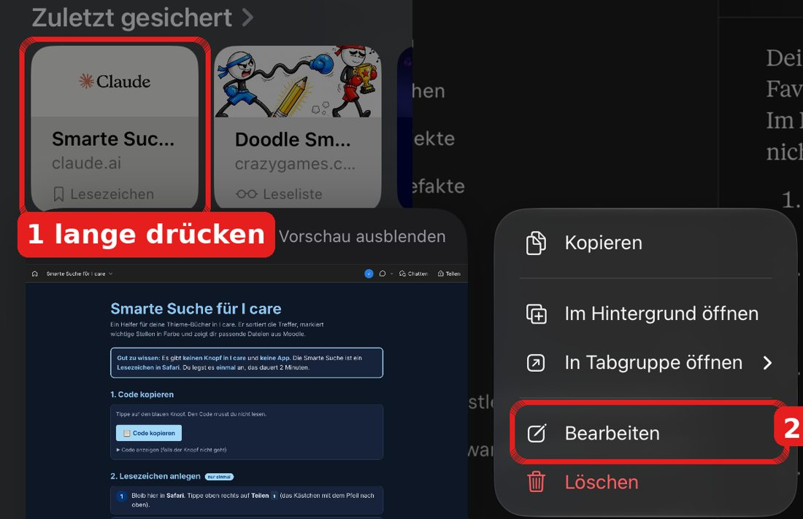
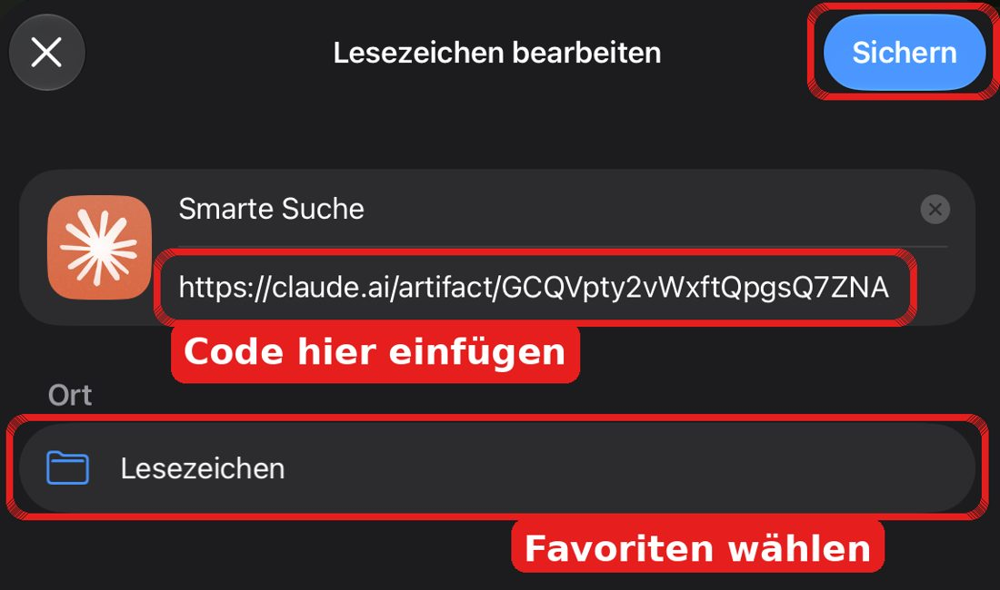

Ein Helfer für deine Thieme-Bücher in I care. Er sortiert die Treffer, markiert wichtige Stellen in Farbe und zeigt dir passende Dateien aus Moodle.
Für deine Klasse: Zeig diesen QR-Code. Deine Freunde scannen ihn mit der Kamera und landen genau hier.
Gut zu wissen: Es gibt keinen Knopf in I care und keine App. Die Smarte Suche ist ein Lesezeichen in Safari. Du legst es einmal an, das dauert 2 Minuten.
1. Code kopieren
Tippe auf den blauen Knopf. Den Code musst du nicht lesen. Er ist kurz und holt sich die Smarte Suche jedes Mal frisch aus dem Internet, so bekommst du Updates automatisch.
Code anzeigen (falls der Knopf nicht geht)
Ins Feld tippen → „Alles auswählen“ → „Kopieren“.
2. Lesezeichen anlegennur einmal
1
Bleib hier in Safari. Tippe oben rechts auf Teilen ⬆︎ → „Lesezeichen hinzufügen“. Name: Smarte Suche. Dann „Sichern“.
2
Tippe oben links auf das Seitenleisten-Zeichen ▭ → Lesezeichen 📖. Lange auf „Smarte Suche“ drücken → „Bearbeiten“.

3
Ins Feld mit der Adresse tippen und mit dem kleinen ⓧ alles löschen. Lange ins leere Feld drücken → „Einfügen“. Bei „Ort“ auf Favoriten stellen. Dann „Sichern“. Geschafft! 🎉

Im Adressfeld muss danach javascript: am Anfang stehen. Steht da noch eine normale Internetadresse, hast du vorher nicht auf „Code kopieren“ gedrückt.
3. Jeden Tag benutzen
1
Öffne I care und such ein Thema, z. B. Schlaganfall.
2
Tippe oben in die Adresszeile. Darunter siehst du deine Favoriten.
3
Tippe auf „Smarte Suche“. Sie geht über der Seite auf. ✨
4. Was kann sie?
Filtern nach: Thema (z. B. Symptome, Therapie, Pflege), Zielgruppe (z. B. Kinder, Ältere) und Buch.
📋 Überblick ganz oben: zu jedem Agenda-Punkt (Definition, Ursachen, Symptome …) der passende Satz aus dem Buch, mit Quelle.
📖 Hauptkapitel zuerst: die ausführlichsten Kapitel, mit Wörter-Anzahl und den wichtigsten Sätzen.
🗂 Fachbegriffe: Latein und Deutsch, zum Lernen und für Karteikarten (Quizlet/Anki).
☆ Merken: Gute Stellen sammeln und daraus mit Claude ein Plakat oder eine Präsentation machen.
Tippfehler? Bei 0 Treffern kommen Vorschläge: „Meintest du …?“
5. Moodle dazuholenoptional
1
Öffne in Safari deinen Kurs in Moodle.
2
Tippe dort auch auf das Lesezeichen „Smarte Suche“.
3
Tippe auf „Dateien einlesen“, beim ersten Mal auch „+ PDF-Inhalte“.
4
Tippe auf „Liste für I care kopieren“.
5
Geh zu I care → Smarte Suche → Tab „Moodle“ → „Moodle-Liste einfügen“ → „Aus Zwischenablage einfügen“.
Schneller: Hol dir vom Klassensprecher den Klassen-Code. Dann in I care → Smarte Suche → Tab „Moodle“ → „🔑 Klassen-Liste laden“ → Code eingeben. Fertig, ohne selbst einzulesen, und neue Dateien kommen automatisch.
Klappt was nicht?
Nichts passiert: Bist du online? Sonst war der Code nicht ganz drin, Schritt 1 und 2 nochmal.
Keine Treffer: Bist du in I care eingeloggt? Seite neu laden und Lesezeichen nochmal antippen.
Seite plötzlich weg: Einfach wieder aufs Lesezeichen tippen. Alles bleibt gespeichert.
Inoffizielles Add-on, erstellt von Jakob, kein Angebot von Thieme. Es nutzt nur deinen eigenen Login; nichts wird hochgeladen.